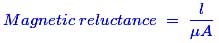
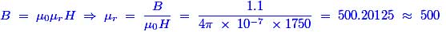

- The unit of relative permeability is
Hints: Relative permeability is a constant of proportionality that exists between magnetic induction and magnetic field intensity. Both are having same dimension which would cancel with each other. Hence, the relative permeability has no dimension.
- A property of a material which opposes the creation of magnetic flux in it known as
Hints: The opposition offered to the passage of magnetic flux through a material and it’s analogous to resistance in an electric circuit is referred to as reluctance. Thus, it matches with the above question perfectly.
- An air gap is usually inserted in magnetic circuits to
Hints: When we add an air gap, it would increase the reluctance of the core. Then it almost decreases its permeability, and thereby the inductance of a winding is lowered. Due to the low inductance, winding would prevent the formation of saturation. That is why an air gap is usually inserted in magnetic circuits.
- A material which is slightly repelled by a magnetic field is known as
Hints: For diamagnetic material, it would be slightly repelled by an external magnetic field. For paramagnetic field, it would be slightly attracted by an external magnetic field. For ferromagnetic material, it would be strongly attracted by an external magnetic field and then for conducting material, it would be attracted or repelled by an external field depends on the electric current flowing through that material.
- A property of a material which opposes the creation of magnetic flux in it is known as
Hints: The opposition offered to the passage of magnetic flux through a material is nothing but the presence of reluctance (it is the electrical analogous to resistance in the magnetic circuits) in that material.
- The electric analog of permeability is
Hints: The reluctance of a magnetically uniform magnetic circuit element can be calculated as:
 - The field at any point on the axis of a electric current carrying coil will be
Hints:Hints: For diamagnetic material, it would be slightly repelled by an external magnetic field. For paramagnetic field, it would be slightly attracted by an external magnetic field. For ferromagnetic material, it would be strongly attracted by an external magnetic field and then for conducting material, it would be attracted or repelled by an external field depends on the electric current flowing through that material.
- The direction of magnetic lines of force is
Hints: The direction of a magnetic line of force at any point gives the direction of the magnetic force on a north pole placed at that point. Since the direction of magnetic line of force is the direction of force on a North Pole, so the magnetic lines of force always begin on the N-pole of a magnet and end on the S-pole of the magnet.
- The electromagnetic force or torque developed in any physical system tends to
Hints: The electromagnetic force is always directed to increase the inductance or to decrease the reluctance in a magnetic circuit. This statement can be proved by the following expressions. We know that the expression of EMF is E = N(dφ / dt), then the expression of reluctance is R = (MMF / φ). So, depends on the flux the EMF is produced and the flux is inversely proportional to the reluctance. Hence, the EMF developed in any physical system tends to decrease the reluctance.
In other words, the production of EMF leads to flow the electric current in any physical systems when the circuit is closed. Hence, due to the flow of electric current there would be a chance to decrease the reluctance. - Earth's magnetic field always has a horizontal component except at
Hints: The direction of a magnetic line of force at any point gives the direction of the magnetic force on a north pole placed at that point. Since the direction of magnetic line of force is the direction of force on a North Pole, so the magnetic lines of force always begin on the N-pole of a magnet and end on the S-pole of the magnet.
- Magnetic moment is a
Hints: The magnetic moment can be considered as a vector quantity because the direction of magnetic moment is perpendicular to the electric current loop of a magnetic circuit which can be obtained by using right hand rule.
- When an iron piece is placed in a magnetic field
Hints: The magnetic line of force will bend away from their usual paths in order to pass through the iron piece since, iron is ferromagnetic material and magnetic flux can easily pass through ferromagnetic material.
- A keeper is used to
Hints: A magnet also becomes weakened by loss of magnetic flux. Magnets should always be stored with a keeper, which is soft iron piece used to join magnetic poles that means it provides a closed path for flux transfer between magnetic poles. The magnet might have greatest strength for a long period if keepers are used.
- A material commonly used for shielding or screening magnetism
Hints: If a nonmagnetic material (for example Brass, Aluminium and copper) is placed in a magnetic field, there is no appreciable change in flux. If a magnetic material (for example, soft iron) is placed in a magnetic field, the flux may be redirected to take advantage of the greater permeability of the magnetic material, as shown in below figure.
- The magnetising force on an iron ring is 1750 AT / m when flux density is 1.1 T. The relative permeability of iron is
Hints: As per the given data,
B = 1.1 Tesla, H = 1750 AT/m, μr =? (μ0 = 4π × 10-7)
We know the basic expression of flux density is as follows,
 - Hard magnetic materials are used
Hints: Hints: The hard magnetic materials retain their magnetism even after the removal of applied magnetic field. Hence these materials are used for making permanent magnet.
- The unit of magnetic charge is
Hints:
- Paramagnetic materials have relative permeability
Hints: Hints: Para-magnetic materials are non-magnetic material. Non-magnetic materials are always having slightly relative permeability more than unity. The best example is Aluminium.
- Magnetising steel is normals difficult because
Hints: The steel materials are relatively difficult to magnetize, because of the opposition offered to the magnetic force lines and it would try to distribute throughout the material. The opposition of the magnetic force lines on that material is called reluctance. Reluctance is inversely proportional to the permeability. Hence, due to the high reluctance value in steel material, the permeability is very low. That is why the steel is very difficult to magnetize.
- Air gap has ..............reluctance as compared to iron or steel path.
Hints: The opposition offered to the magnetic force lines and thereby reluctance is very huge in steel path. But, in air gap, there is no opposition to magnetic force lines and it allows the magnetic force line to flow through the air gap. Hence, the reluctance is very less in air gap as compared to iron or steel path.
Design with  by SARU TECH
by SARU TECH
www.sarutech.com
Content Credited to electrical4u.com
Online Electrical Engineering Study Site